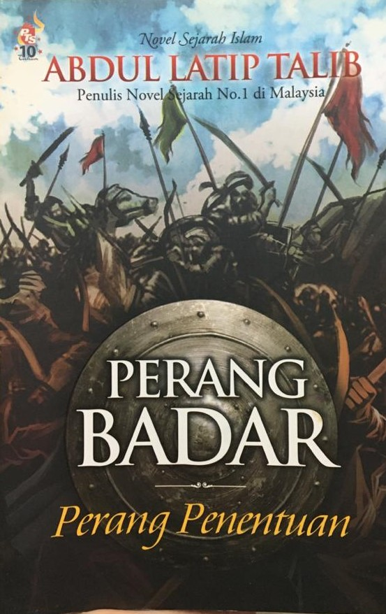

PRELOVED BOOKSTORE | 

Perang Badar (Perang Penentuan)
Preloved Price: RM 10.00
Category: Islamic Book
Summary: Inilah perang pertama dan ini adalah ‘perang’ bagi ujian keimanan. Ujian keimanan yang datang pada saat umat Islam menjalani ibadah puasa. Para bangsawan Quraisy kafir Mekah dengan tentera-tentera yang gagah, mencabar kekuatan umat Islam di Madinah. Cabaran mereka bersandarkan pada tajamnya pedang dan hitam nya hati. Umat Islam yang dipimpin oleh junjungan besar Nabi Muhammad SAW tidak undur. Bersama dengan 305 tentera Islam yang setia menunggu di Badar. Mereka daripada kabilah-kabilah yang berbeza, berjuang demi agama yang sama. Pada 17 Ramadhan tahun ke-2 Hijrah, Perang Badar, perang penentuan pun bermula. Pentingnya Perang Badar hingga Nabi Muhammad berdoa, sekiranya mereka kalah maka tidak ada lagi manusia yang akan menyembah Allah di muka bumi ini.
| Title | Perang Badar (Perang Penentuan) |
|---|---|
| ISBN | 9789833892921 |
| Format: | Paperback |
| Author: | Abdul Latip Talib |
| Category: | Islamic Book |
| Publisher: | PTS Litera Utama Sdn.Bhd. |
*Reminder: Please copy&paste the title of the book to put into the order list and also please calculate the price of the book your own to pay it on checkout form.